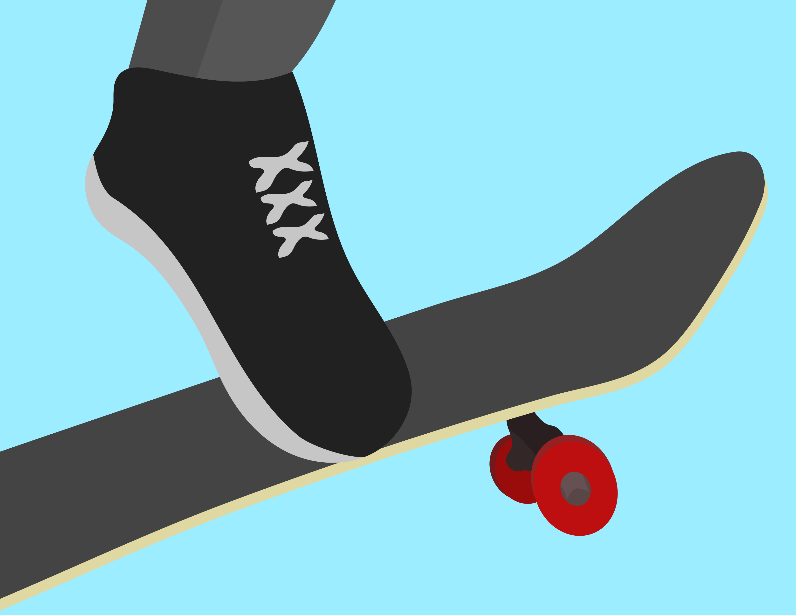
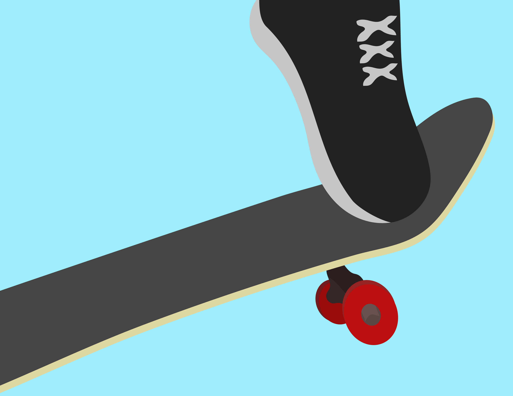

STEP 4
Scrape the Board
As soon as you pop the tail, your front foot needs to slide up toward the nose of the board. This motion helps level out the board in mid-air and gives you control over the height and direction of your Ollie.


Think of it like dragging your foot across the grip tape; your foot should stay flat, and your ankle should be loose so it can smoothly slide upward. Make sure to slide your foot up quickly, as this motion is what brings the back wheels off the ground.